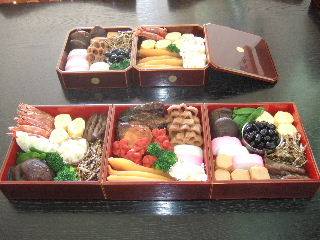
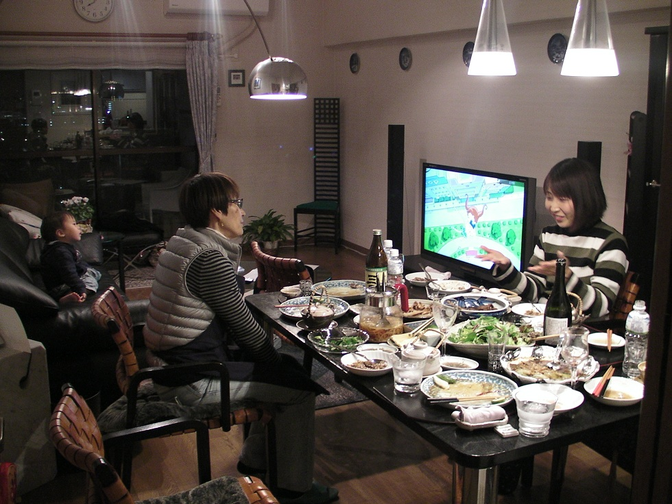

卒業生からの報告です。 平成29年1月8日 |
|||
卒業生からの報告 第2弾です。 今年も早や半年が終わり、明日からはもう7月です。 そして、昨年暮れに、自宅でおせち料理に挑戦しました。 その結果は、今年初めにホームページで報告したのですが、その頁をこちらの都合で先日削除してしまい、先生から「再度掲載して欲しい」と |
|||
| 12月30日の夕方、おせち料理の準備が出来て満足そうです。 先生から教わったように出来た料理をテーブルに並べて、明日のお重詰め待ちです。 | |||
|  | |||
| 12月31日、お節の出来上がりです、下段の3重がメインですが、上段の2段は補充用に用意しました。 お節を前に自慢げな私と、姪を迎えての試食の様子です！ | |||
| 下記の写真は、教室での過去の作品です。 | |||
| 平成21年 平成22年 平成23年 | |||
| 平成24年 平成25年 | |||
スタジオ・クレエ卒業生からの報告第1弾です。 |
|||
スタジオ・クレエに通い始めて160回目を迎えた昨年８月に、住み慣れた福岡から故郷の名古屋に転居してきました。 その後は、毎月のワイン教室のデータをピコティの脇田先生からメールで送ってもらい、その内容をスタジオ・クレエのホームページに転載の形で 教室で一緒に学んだ皆さんとは、その後中々会える機会がありませんが、毎月送ってもらうデータをみながら教室時代を懐かしんでいます。 料理メニューは、教室に通い始めた初期の頃に教わったものばかりですが、皆がおいしいと言って喜んでくれました。
|
|||
 |
|||
| 別件の用事で遅れてきた兄も残しておいた分け前の料理をを満足し、明日食べるからとビーフストロガノフをお持ち帰りしました。これも当家のシェフの心ばかりのサービス？ | |||
| ホームパーティ報告 第8弾です。 | |||
写真は、甥の智ちゃんが撮ってくれたので久々にシェフの登場です！キッチンは、教室に通い始めてからキッチンハウスで改装してもらった当初のままです。 |
|||
 |
|||
| ホームパーティ報告 第 5 弾 です | |||
”Mさん お疲れさま!ディナーパーティ”
|
|||
スタジオ・クレエの料理教室に通い始めてから、来月で丁度丸10年になります。 当初から、世話になっている”ブティックのメンバー”に、その都度復習を兼ねてその成果を時々試食をしてもらっているのですが、今回、2月のレシピを中心に”Mさんお疲れさま！ﾃﾞｨﾅｰパーティ”を開きました。 今回も作った料理をすべて完食してもらい、おいしいお酒もいっぱい楽しんでもらいました。 午後7時から始まったディナーが終わったのは午前1時で、後片付けを終わって就寝したのは午前3時でした。（これは毎回の恒例行事ですが・・・。） 翌日は、二日酔い気味の心地よい疲れが残っていました！ |
|||
| ホームパーティ報告 第4弾 です | |||
Ｋさん古希祝いパーティ |
|||
暑かった夏もようやく過ぎてしのぎやすくなった中秋のある日、元の会社でお世話になったKさん夫妻を招いて”古希祝いパーティー”を開きました。 スタジオ・クレエで学んだ自信作をチョイスして下記のメニューでおもてなしをしました。 |
|||
|
|||
| ホームパーティ報告第2弾です | |||
穂香ちゃんご一行様歓迎会 前 酒 大吟醸智恵美人（杵築） 吸い物 どびん蒸し 主 食 干ものご飯 デザート バナナキャラメルパイ 満2歳のお誕生日(10/31)おめでとう！ |
|||
国光智徳・久美子夫妻が満2歳になる穂香ちゃんを連れて京都から遊びに来てくれたので、スモールホームパーティを開きました。 言葉が少ししゃべれるようになった穂香ちゃんは、ピーマンの肉詰、里芋などを”ごっち！ごっち！”といっていっぱい食べてくれました。 特に、利尻昆布だしの松茸のどびん蒸しは立て続けに飲み干しました。 子供の味の感覚はとても正直ですね。びっくりです！ |
|||
| 翌日はとても気持ちの良い秋晴れで、海の中道海浜公園に行きました。広い公園を飛び跳ねてとても楽しそうでした。 | |||